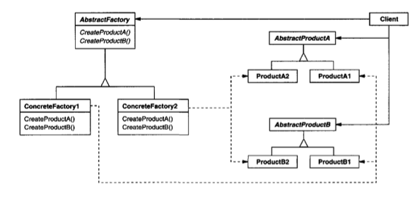
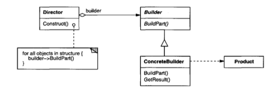
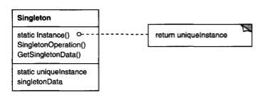

TIC 409 Advanced OOP
Creational patterns
üè≠ Abstract factory pattern (aka. Kit)
Intent
Provide an interface for creating families of related or dependent objects without specifying their concrete classes
Diagram
Example
Let's say you are creating a simple game. In the game, the player can do 3 actions: attack, travel, visit a friend. The game can have multiple different settings : Medieval, Futuristic and depending on the style chosen, different classes are used.
For example: When traveling, if you are using the medieval setting, you will be using a horse, however, if you are using the Futuristic setting, you will use a spaceship. Same when attacking, if you attack in medieval, you attack with a sword, however, if you are using the Futuristic setting, you will use a Laser Sabre.Questions
- Start by copying the start code and reading it. What do you think about the code structure ?
- Let's assume we wanted to add a new setting : Modern (Car, MachineGun). Start by adding the necessary classes.
- Do the necessary changes have a working program. How hard was it to integrate a new setting ? [code]
- Refactor the code by using the Abstract Factory pattern to remove redundancies and improve code flexibility [code]
- [Optional - Concrete fallback variation] How to make it so that you don't have to implement all the methods in the abstract factory ?
-
[Optional - Extensible factories variation] How to make your factories generic so that you don't have to create a factory method for each type of class ?
üèó Builder pattern
Intent
Separate the construction of a complex object from its representation so that the same construction process can create different representations.
Diagram
Example
Let's say you are building a sci-fi simulation game. In the game, you can create a Spacebase and each spacebase can have multiple Electricity Generators, Water Plants and Houses.
For example: A spacebase can have 2 Electricity Generators, 2 Water Plants and 5 Houses.Questions
- Start by copying the start code and reading it. What do you think about the code structure ?
- How can we hide the complexity of creating a Spacebase using constructors ? What do you think about this solution ?
- How can we refactor the code implementing the Builder pattern to hide the complexity ? [code]
- [Optional - Director variation] Implement the director variation to facilitate the Spacebase creation process even further.
- [Optional - Fluent variation] Can you implement a fluent interface for the builder to enable function chaining ?
üåü Singleton pattern
Intent
Ensure a class has only one instance and provide a global point of access to it.
Diagram
Example
Starting with the code implemented on the Builder pattern, in this example, you will have to implement a Logger class that will be used by all the different classes to generate log messages.
Questions
- Start by copying the start code and reading it. What do you think about the code structure ?
- How can you make it easier to access the Logger without having to pass it to each class ?
- [Optional - Eager creation variation] Implement the eager creation variation of the singleton on a Sound singleton class.
-
[Optional - Registry variation] How can you implement multiple different loggers that log to different outputs ?
üõ† Factory method pattern
Intent
Define an interface for creating an object, but let subclasses decide which class to instantiate. Factory Method lets a class defer instantiation to subclasses.